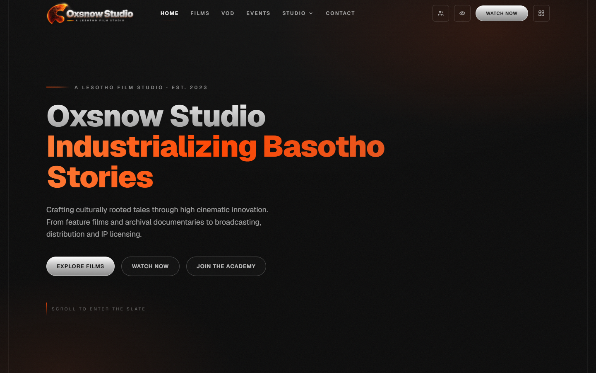
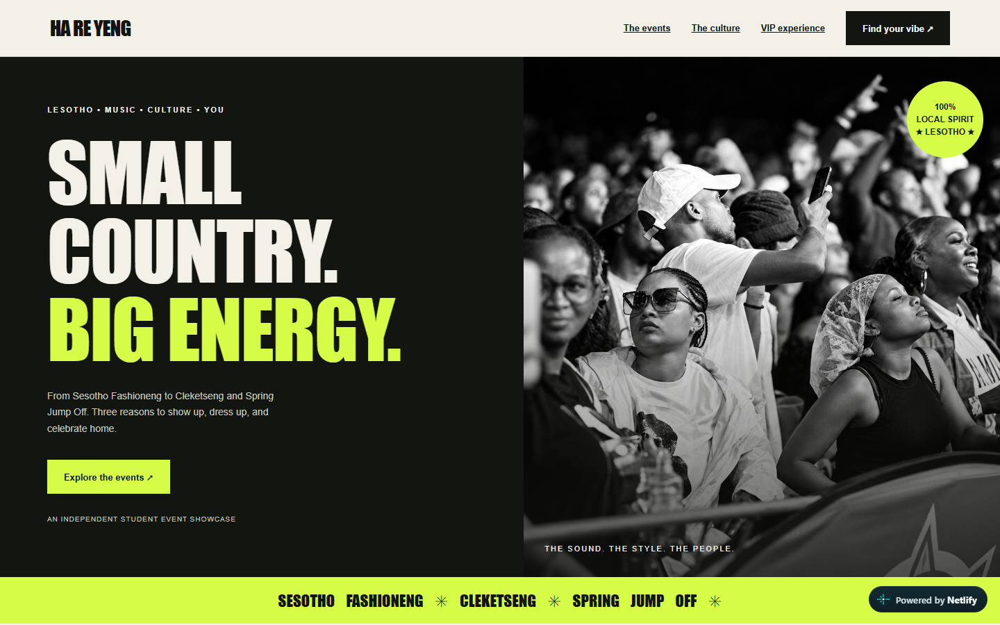
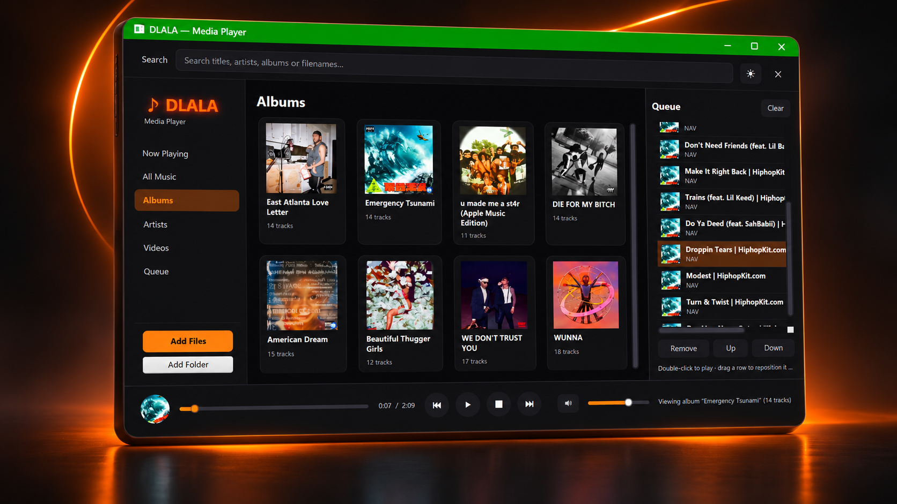

Web experiences
Responsive websites and interfaces with a strong visual identity and a clear user journey.
Software engineer in progress · Lesotho
I'm Keletso Hato — a Software Engineering student and self-taught developer crafting thoughtful experiences for the web, desktop, and creative technology.
01 / About
Curiosity came first. Then the projects. I build to understand how things work — and to make them work better.
I'm Keletso Hato, a Software Engineering student and self-taught developer based in Lesotho.
I'm studying BSc Software Engineering at Limkokwing University of Creative Technology. Outside lectures, I teach myself by experimenting, breaking things, fixing them, and shipping projects.
This site is a living record of that journey — from coursework and early prototypes to tools and experiences people can actually use. No inflated titles. Just the work, the process, and the next thing to learn.
Follow the progress02 / What I do
My work sits between practical software engineering and expressive digital design.
Responsive websites and interfaces with a strong visual identity and a clear user journey.
Exploring how software can simplify everyday workflows and make services more accessible.
Connecting code, storytelling, and interactive media to build memorable digital experiences.
03 / Selected projects
A few things I've built or contributed to — each one part of the learning curve.



Promotional artwork04 / Project radar
A live map of selected builds. Hover or focus a target to trace its signal, then open a project for the verified details.
05 / My toolkit
Technologies I've used in coursework and independent projects — not a claim of mastery.
Hover any logo for its name. Proficiency levels are intentionally not listed — learning is ongoing.
06 / The journey
A progression from fundamentals to independent builds. No invented dates — just the real path so far.
Programming coursework, coding exercises, and early experiments that built the base for everything after.
HTML, CSS, and JavaScript — building responsive interfaces and learning by shipping instead of only watching tutorials.
Built DLALA, a JavaFX media-player application, as part of university coursework.
Worked on a civic technology initiative exploring how digital services can become more accessible.
Developed Oxsnow Studio and HA RE YENG — projects at the intersection of code, culture, and storytelling.
Continuing to build, refine, and collaborate — growing toward professional software development one project at a time.
Developer terminal
Type help to see available commands.
HATO developer terminal ready. Type help to begin.
07 / Contact
HATO // COMMUNICATION TERMINAL
Have an idea, a project, or a problem worth solving? Let's build something useful.
HATO communication terminal online. Connection available. Awaiting input.
No fabricated email, phone number, LinkedIn, or testimonials. More channels will be added once verified.